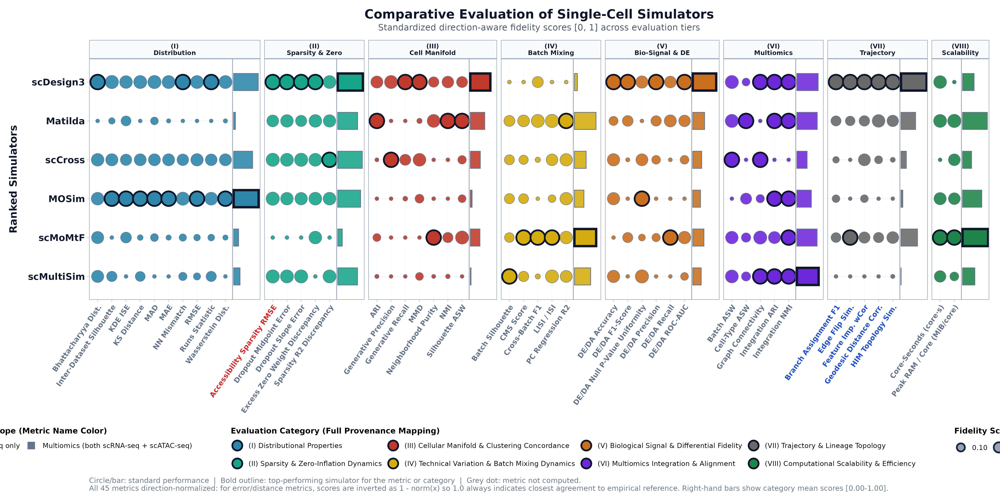
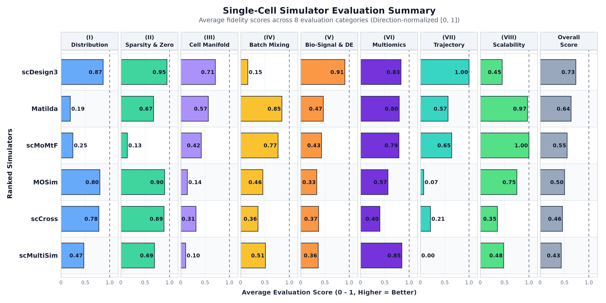
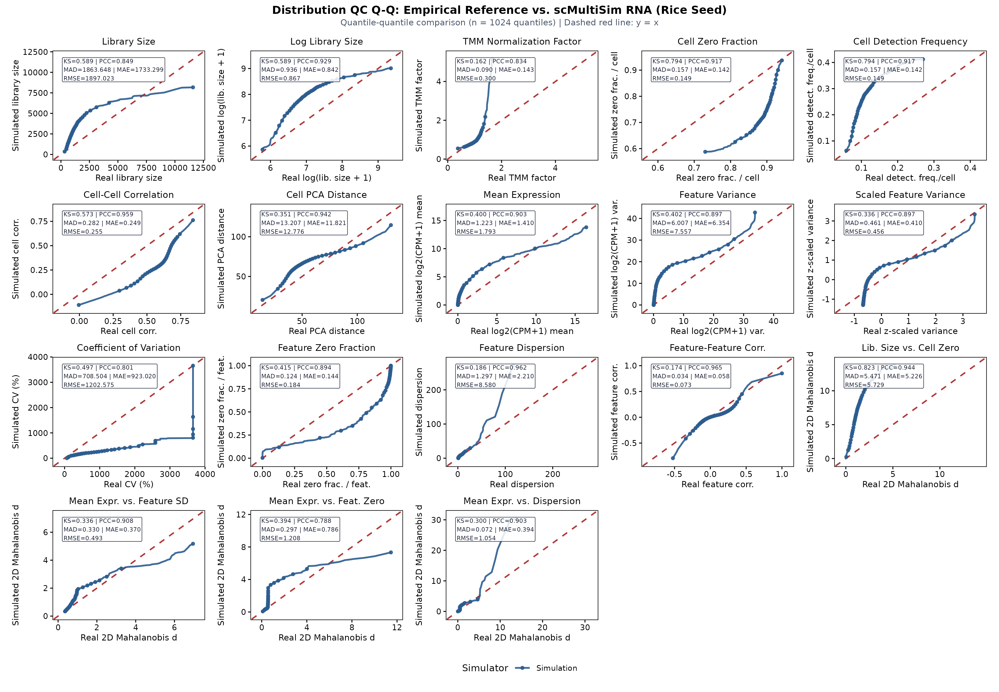
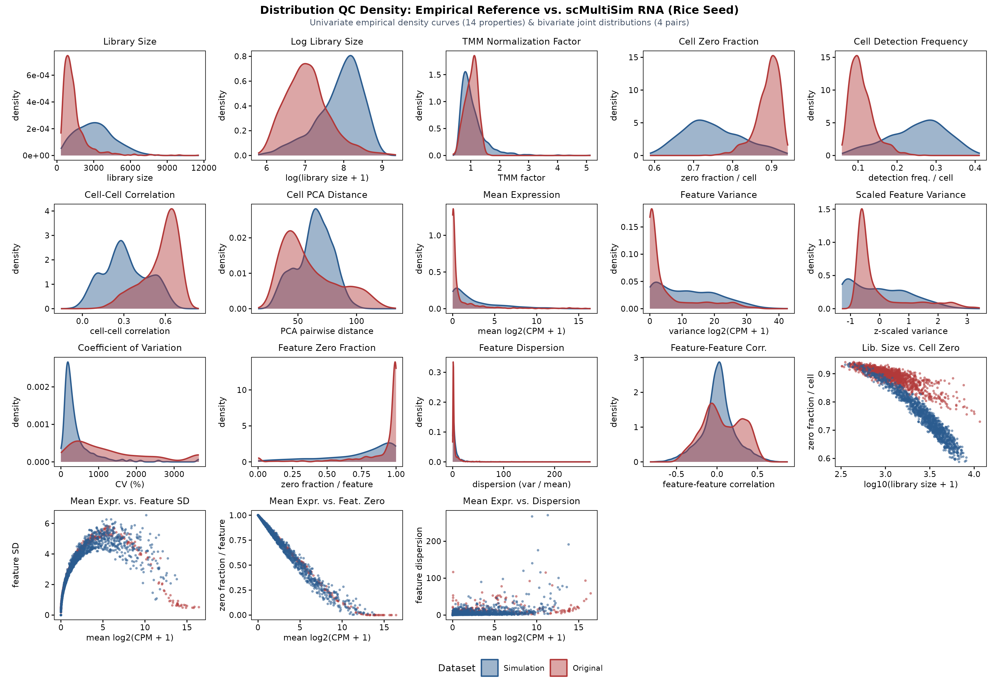
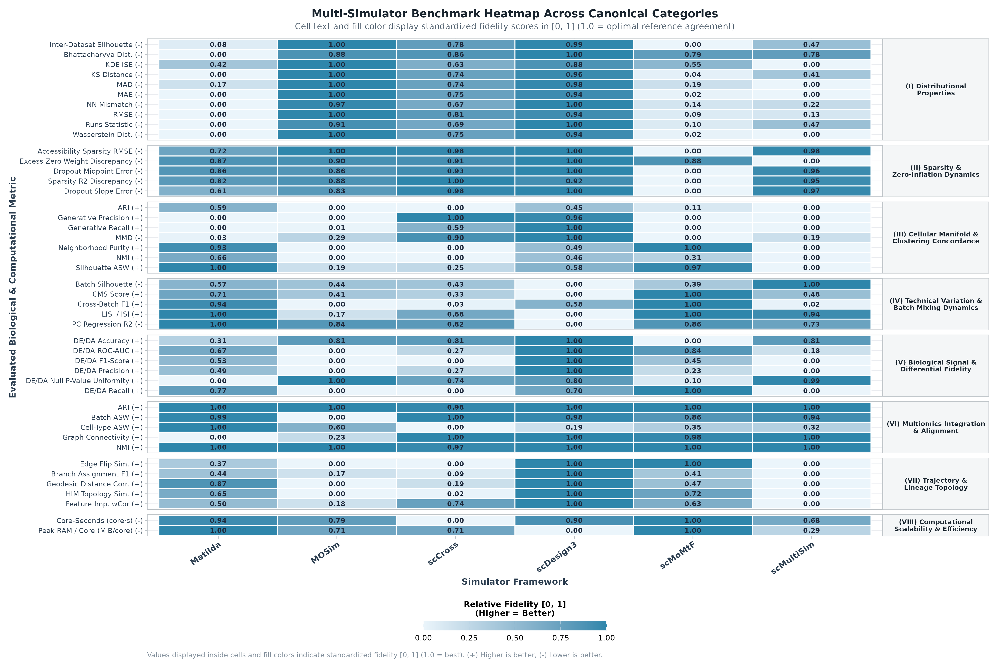
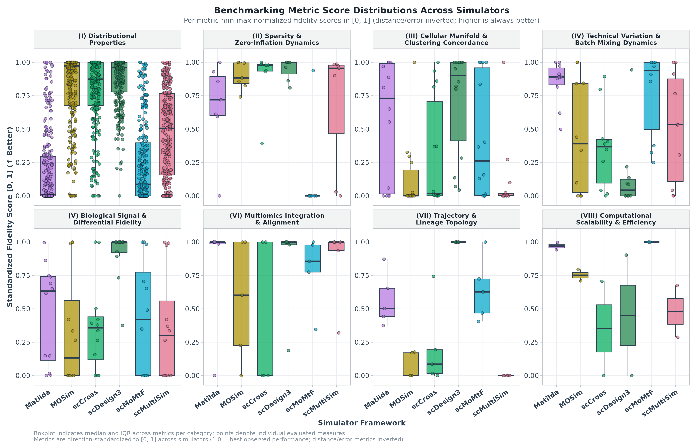
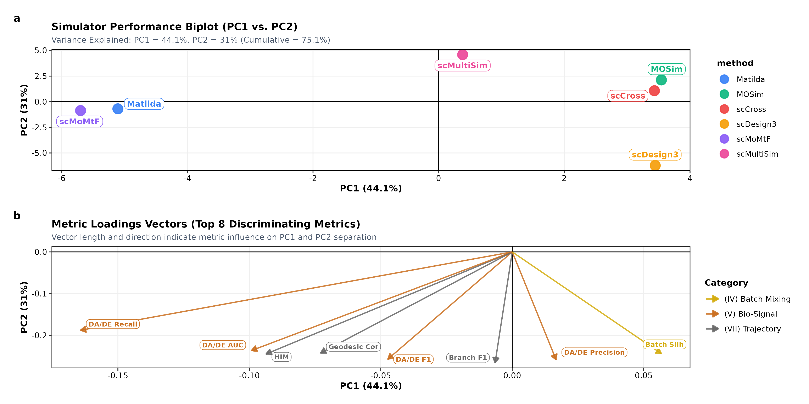
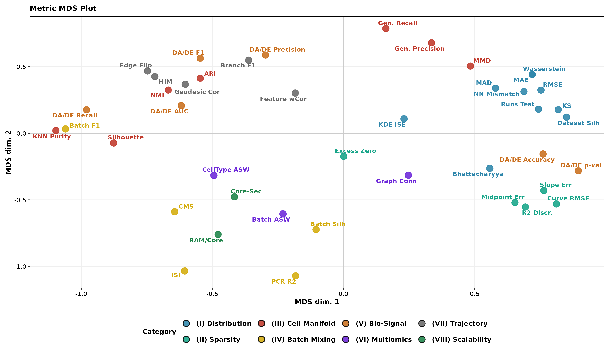
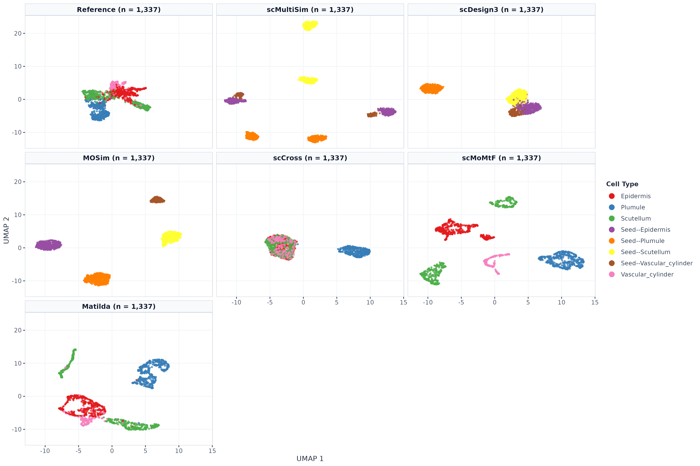
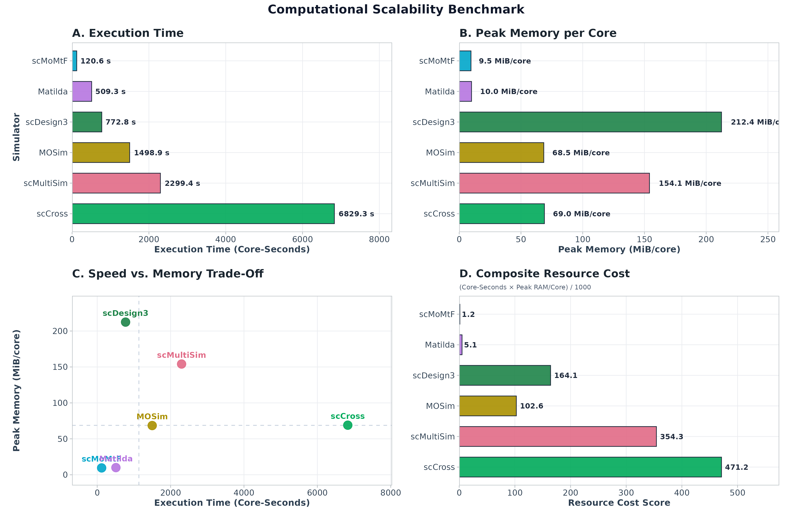

Demonstration 3: Paired Multiomics (scRNA-seq + scATAC-seq) Simulation Evaluation
Source:vignettes/demo-multiomics.Rmd
demo-multiomics.RmdIntroduction
Single-cell multiomics co-assay technologies (such as 10x Chromium Multiome, SHARE-seq, and SNARE-seq) enable the simultaneous measurement of gene expression (scRNA-seq) and chromatin accessibility (scATAC-seq) from the exact same individual cells. This joint profiling provides unprecedented resolution into transcriptional regulation, enhancer-promoter dynamics, and epigenomic priming.
However, simulating paired single-cell multiomics presents distinct computational and statistical challenges beyond unimodal simulation: * Cell-Level Cross-Modality Pairing: Simulated data must preserve the 1-to-1 correspondence between cellular barcodes in the RNA and ATAC modalities—column in the RNA count matrix represents the exact same physical cell as column in the ATAC matrix. * Biological Coupling & Cross-Modal Concordance: Open chromatin at regulatory loci typically precedes or correlates with gene transcription. Simulation algorithms must preserve biological correlation between peak accessibility and target gene expression without introducing synthetic alignment artifacts. * Asymmetric Sparsity & Modality Noise Profiles: scRNA-seq expression exhibits continuous distribution with count-dependent logistic dropouts (80–90% zeros), whereas scATAC-seq peak accessibility is near-binary and subject to extreme diploid-limited sparsity (90–98% zeros). Simulators must balance these divergent biophysical properties concurrently. * Unified Latent Geometry: Joint low-dimensional embeddings must capture continuous developmental kinetics and distinct cell-type clusters congruently across both modalities.
scSimEval provides a standardized,
reference-based benchmarking framework to evaluate paired single-cell
multiomics simulations across all 8 active evaluation categories
comprising 56 curated metrics:
- Category I: Distributional Properties — Univariate statistical distances (Wasserstein, Kolmogorov–Smirnov, MAD, Bhattacharyya) evaluated across cell-level library sizes, gene expression rates, and peak accessibility frequencies for both modalities.
- Category II: Sparsity & Zero-Inflation Dynamics — Logistic dropout curves for scRNA-seq and quadratic accessibility-sparsity curves for scATAC-seq, quantifying curve RMSE and fit discrepancy.
- Category III: Cellular Manifold & Clustering Concordance — Latent manifold preservation, Maximum Mean Discrepancy (MMD), Generative Precision & Recall, Average Silhouette Width (ASW), Adjusted Rand Index (ARI), and Normalized Mutual Information (NMI).
- Category IV: Technical Variation & Batch Mixing Dynamics — Batch Silhouette Width, Principal Component Regression (), Cell-Specific Mixing Score (CMS), and Inverse Simpson’s Index (ISI).
-
Category V: Biological Signal & Differential
Fidelity — Pseudobulk
edgeR-QLFstatistical testing across biological replicates assessing differentially expressed genes (DEG) and differentially accessible peaks (DA). - Category VI: Multiomics Integration & Alignment — Cross-modality feature correlation preservation, joint-embedding Batch ASW, joint Cell-Type ASW, within-cell-type -NN graph connectivity, and joint clustering ARI/NMI.
- Category VII: Trajectory & Lineage Topology — Milestone graph topology similarity (HIM, edge-flip), geodesic distance correlation, and branch assignment fidelity.
-
Category VIII: Computational Scalability &
Efficiency — Hardware-normalized execution runtime
(
core_seconds), resident peak memory per allocated core (memory_per_core_mib), simulation throughput (cells/second), and speed-memory trade-offs.
Direction-Aware Score Normalization
Raw metrics span disparate physical units (distances, runtimes, MiB
RAM, correlation coefficients). scSimEval standardizes all
raw metrics into direction-aware fidelity scores in
,
where
indicates ideal biological fidelity: * For distance and error
metrics where lower values represent superior accuracy (e.g.,
Wasserstein, MMD, dropout RMSE), scores are inverted:
.
* For bounded concordance indices where higher values represent superior
fidelity (e.g., ARI, NMI, Generative Precision, DA ROC-AUC), scores are
scaled linearly to
.
* For mixing and balance metrics where values closer to zero indicate
optimal batch mixing without clustering artifacts (e.g., Batch
Silhouette), scores are centered symmetrically.
1. Input Data Requirements & Object Setup
To benchmark a paired multiomics simulation, scSimEval
requires an empirical biological reference alongside candidate simulated
datasets:
-
Empirical Biological Reference
(
ref_multi):- A multi-modal
SingleCellExperiment(withaltExp(sce, "ATAC")) or a named listlist(RNA = rna_sce, ATAC = atac_sce)profiled from the same single cells, storingcell_typeandbatchincolData. Users starting from Seurat objects can convert viaSeurat::as.SingleCellExperiment().
- A multi-modal
-
Simulated Candidate Datasets
(
sim_multi):- Paired RNA and ATAC matrices generated by candidate simulation algorithms, accompanied by corresponding cell-type and batch annotations.
-
Computational Resource Logs (Optional / Category
VIII):
- Simulation elapsed wall-clock time (
elapsed_time), peak resident memory (memory_mb), and allocated CPU cores (sim_cores).
- Simulation elapsed wall-clock time (
Illustrative Case Study: 6 State-of-the-Art Simulators on Rice Seed Tissue
In this demonstration, we benchmark 6 state-of-the-art single-cell multiomics simulators on an empirical paired biological dataset: Rice Seed tissue (Oryza sativa), comprising 1,337 individual cells with 1,401 scRNA-seq genes and 4,203 scATAC-seq peaks across 4 annotated cell types and 2 biological batches:
-
scMultiSim(Multi-modal kinetic and spatial simulator modeling joint transcriptomic and chromatin accessibility profiles) -
scDesign3(Unified probabilistic copula model with customizable distribution families) -
MOSim(Multi-omics simulation package generating expression and regulatory profiles) -
scCross(Cross-modality generative adversarial network modeling non-linear epigenomic-transcriptomic couplings) -
scMoMtF(Multi-omics matrix tri-factorization model for joint multi-layer data simulation) -
Matilda(Neural network-based multi-task multiomics simulator learning latent cross-modal manifolds)
Empirical execution wall-clock runtimes and peak RAM consumption tracked during data simulation under high-performance computing allocations (16 CPU cores) are summarized below:
| Simulator | Wall-Clock Runtime (s) | Peak Resident Memory | Memory Unit | CPU Cores |
|---|---|---|---|---|
| scMultiSim | 143.71 | 2465.20 | MiB | 16 |
| scDesign3 | 48.30 | 3398.40 | MiB | 16 |
| MOSim | 93.68 | 1095.70 | MiB | 16 |
| scCross | 426.83 | 1157.56 | MB | 16 |
| scMoMtF | 7.54 | 160.02 | MB | 16 |
| Matilda | 31.83 | 167.32 | MB | 16 |
2. Running the Unified Paired Benchmarking Pipeline
The master evaluation entrypoint for multiomics in
scSimEval is evaluate_multiomics_accuracy().
Specifying pairing = "paired" triggers joint cross-modality
pairing checks, dual unimodal evaluations, and Category VI integration
analyses:
2.1 Benchmarking a Single Simulator
library(scSimEval)
# Run full evaluation across all 8 paired multiomics categories
eval_result <- evaluate_multiomics_accuracy(
ref_multi = list(RNA = ref_rna_sce, ATAC = ref_atac_sce),
sim_multi = list(RNA = sim_rna_sce, ATAC = sim_atac_sce),
pairing = "paired",
elapsed_time = 48.30, # Simulation runtime in seconds
time_unit = "seconds",
memory_mb = 3398.40, # Simulation peak RAM
memory_unit = "MiB",
sim_cores = 16L, # Allocated simulation cores
compute_bivariate = FALSE,
threads = 16L, # Multiprocessing threads for evaluation
verbose = TRUE
)
# Inspect tidy metrics summary table
head(eval_result$benchmark_summary_table)2.2 Benchmarking Multiple Simulators in Batch Mode
When evaluating multiple simulation algorithms across a benchmark study:
sim_configs <- list(
scMultiSim = list(file = "scMultiSim_rice_Seed_sce.rds", time = 143.71, mem = 2465.20, munit = "MiB", cores = 16L),
scDesign3 = list(file = "scDesign3_rice_Seed_sce.rds", time = 48.30, mem = 3398.40, munit = "MiB", cores = 16L),
MOSim = list(file = "mosim_rice_Seed_sce.rds", time = 93.68, mem = 1095.70, munit = "MiB", cores = 16L),
scCross = list(file = "scCross_rice_Seed_sce.rds", time = 426.83, mem = 1157.56, munit = "MB", cores = 16L),
scMoMtF = list(file = "scMoMtF_rice_Seed_sce.rds", time = 7.54, mem = 160.02, munit = "MB", cores = 16L),
Matilda = list(file = "matilda_rice_Seed_sce.rds", time = 31.83, mem = 167.32, munit = "MB", cores = 16L)
)
all_benchmark_results <- list()
for (sim_name in names(sim_configs)) {
cfg <- sim_configs[[sim_name]]
cat("[scSimEval] Benchmarking:", sim_name, "...\n")
sim_val <- validate_multiomics_input(readRDS(cfg$file), sim_name)
eval_out <- evaluate_multiomics_accuracy(
ref_multi = list(RNA = ref_rna_sce, ATAC = ref_atac_sce),
sim_multi = list(RNA = sim_val$m1_obj, ATAC = sim_val$m2_obj),
pairing = "paired",
elapsed_time = cfg$time,
time_unit = "seconds",
memory_mb = cfg$mem,
memory_unit = cfg$munit,
sim_cores = cfg$cores,
compute_bivariate = FALSE,
threads = 16L,
verbose = FALSE
)
tbl <- eval_out$benchmark_summary_table
tbl$Method <- sim_name
tbl$Dataset <- "Rice Seed (Paired)"
all_benchmark_results[[sim_name]] <- standardize_benchmark_categories(tbl)
}
# Consolidate into unified benchmark data frame
final_benchmark_df <- do.call(rbind, all_benchmark_results)
final_benchmark_df <- standardize_benchmark_categories(final_benchmark_df)
saveRDS(final_benchmark_df, "paired_benchmark_results.rds")3. Inspecting Benchmark Results Across Evaluation Categories
The resulting evaluation table contains standardized columns: *
Dataset: Evaluated biological reference
dataset (Rice Seed (Paired)). *
Method: Candidate simulator evaluated. *
Category: One of the 8 active evaluation
categories. * Metric: Standardized metric
identifier. * Score_Raw: Unnormalized raw
empirical value (physical units: seconds, MiB, KS statistic,
correlation). * Score: Standardized
direction-aware fidelity score normalized to
().
Overall Fidelity Leaderboard
Aggregating normalized scores across all 8 categories yields the overall simulator ranking for the Rice Seed paired multiomics benchmark:
df_norm <- scSimEval::normalize_bubble_scores(final_benchmark_df)
agg <- stats::aggregate(Score_Norm ~ Method + Category, data = df_norm, FUN = mean, na.rm = TRUE)
leaderboard <- stats::aggregate(Score_Norm ~ Method, data = agg, FUN = mean, na.rm = TRUE)
leaderboard <- leaderboard[order(leaderboard$Score_Norm, decreasing = TRUE), ]
leaderboard$Rank <- seq_len(nrow(leaderboard))
leaderboard$Average_Fidelity <- sprintf("%.1f%%", leaderboard$Score_Norm * 100)
leaderboard[, c("Rank", "Method", "Average_Fidelity", "Score_Norm")]
#> Rank Method Average_Fidelity Score_Norm
#> 4 1 scDesign3 73.4% 0.7336138
#> 1 2 Matilda 63.6% 0.6355499
#> 5 3 scMoMtF 55.5% 0.5547216
#> 2 4 MOSim 50.2% 0.5016296
#> 3 5 scCross 45.9% 0.4586984
#> 6 6 scMultiSim 43.3% 0.4334542Below we inspect representative metric scores across active evaluation categories:
3.1 Category I: Global & Marginal Distributional Properties
Assesses univariate goodness-of-fit across cell library sizes, feature means, and feature variances for both RNA genes and ATAC peaks:
head(subset(final_benchmark_df, grepl("Distributional", Category))[, c("Method", "Modality", "Property", "Metric", "Value", "Score")], 6)
#> Method Modality Property Metric Value
#> scMultiSim.1 scMultiSim RNA library_size Wasserstein 1.733455e+03
#> scMultiSim.2 scMultiSim RNA library_size KS 5.880703e-01
#> scMultiSim.3 scMultiSim RNA library_size MAD 1.862000e+03
#> scMultiSim.4 scMultiSim RNA library_size Bhattacharyya 9.225393e-03
#> scMultiSim.5 scMultiSim RNA library_size Runs_Statistic -2.092800e+01
#> scMultiSim.6 scMultiSim RNA library_size NN_Mismatch 8.100000e-01
#> Score
#> scMultiSim.1 1.733455e+03
#> scMultiSim.2 5.880703e-01
#> scMultiSim.3 1.862000e+03
#> scMultiSim.4 9.225393e-03
#> scMultiSim.5 -2.092800e+01
#> scMultiSim.6 8.100000e-013.2 Category II: Sparsity & Zero-Inflation Dynamics
Quantifies logistic dropout curve fidelity for scRNA-seq and quadratic accessibility-sparsity curve fidelity for scATAC-seq:
head(subset(final_benchmark_df, grepl("Sparsity", Category))[, c("Method", "Modality", "Property", "Metric", "Value", "Score")], 6)
#> Method Modality Property
#> scMultiSim.141 scMultiSim RNA dropout_curve
#> scMultiSim.142 scMultiSim RNA dropout_curve
#> scMultiSim.143 scMultiSim RNA dropout_curve
#> scMultiSim.144 scMultiSim RNA excess_zero_weights
#> scMultiSim.278 scMultiSim ATAC accessibility_sparsity_curve
#> scMultiSim.279 scMultiSim ATAC accessibility_sparsity_curve
#> Metric Value Score
#> scMultiSim.141 slope_error 0.07438266 0.07438266
#> scMultiSim.142 midpoint_error 0.40435684 0.40435684
#> scMultiSim.143 r2_discrepancy 0.10550345 0.10550345
#> scMultiSim.144 excess_zero_weight_discrepancy 0.16975955 0.16975955
#> scMultiSim.278 curve_rmse 0.05517719 0.05517719
#> scMultiSim.279 r2_discrepancy 0.01240594 0.012405943.3 Category III: Cellular Manifold & Clustering Concordance
Measures Maximum Mean Discrepancy (MMD), Generative Precision & Recall, Average Silhouette Width (ASW), ARI, and NMI:
head(subset(final_benchmark_df, grepl("Manifold", Category))[, c("Method", "Property", "Metric", "Value", "Score")], 6)
#> Method Property Metric Value Score
#> scMultiSim.145 scMultiSim manifold MMD 0.5179121 0.5179121
#> scMultiSim.146 scMultiSim manifold Generative_Precision 0.0000000 0.0000000
#> scMultiSim.147 scMultiSim manifold Generative_Recall 0.0000000 0.0000000
#> scMultiSim.281 scMultiSim manifold MMD 0.5947054 0.5947054
#> scMultiSim.282 scMultiSim manifold Generative_Precision 1.0000000 1.0000000
#> scMultiSim.283 scMultiSim manifold Generative_Recall 0.0000000 0.00000003.4 Category IV: Technical Variation & Batch Mixing Dynamics
Evaluates batch silhouette widths, Principal Component Regression (), Cell-Specific Mixing Scores (CMS), and Inverse Simpson’s Index (ISI):
head(subset(final_benchmark_df, grepl("Batch", Category))[, c("Method", "Property", "Metric", "Value", "Score")], 6)
#> Method Property Metric Value
#> scMultiSim.292 scMultiSim batch_mixing batch_silhouette -0.0003841231
#> scMultiSim.293 scMultiSim batch_mixing pcr_r2 0.0004387975
#> scMultiSim.294 scMultiSim batch_mixing cms 0.5456430007
#> scMultiSim.295 scMultiSim batch_mixing isi 1.9922011943
#> scMultiSim.296 scMultiSim batch_mixing cross_batch_F1 0.2376656697
#> scMultiSim.297 scMultiSim batch_mixing batch_silhouette -0.0043904205
#> Score
#> scMultiSim.292 -0.0003841231
#> scMultiSim.293 0.0004387975
#> scMultiSim.294 0.5456430007
#> scMultiSim.295 1.9922011943
#> scMultiSim.296 0.2376656697
#> scMultiSim.297 -0.00439042053.5 Category V: Biological Signal & Differential Fidelity
Evaluates pseudobulk edgeR-QLF testing across biological
replicates, assessing marker gene detection (DEG) and accessible peak
(DA) fidelity:
head(subset(final_benchmark_df, grepl("Differential", Category))[, c("Method", "Modality", "Property", "Metric", "Value", "Score")], 6)
#> Method Modality Property
#> scMultiSim.302 scMultiSim RNA scRNA_differential_expression
#> scMultiSim.303 scMultiSim RNA scRNA_differential_expression
#> scMultiSim.304 scMultiSim RNA scRNA_differential_expression
#> scMultiSim.305 scMultiSim RNA scRNA_differential_expression
#> scMultiSim.306 scMultiSim RNA scRNA_differential_expression
#> scMultiSim.307 scMultiSim RNA scRNA_differential_expression
#> Metric Value Score
#> scMultiSim.302 pval_dist_score 0.9275682 0.9275682
#> scMultiSim.303 accuracy 0.6896265 0.6896265
#> scMultiSim.304 precision 0.0000000 0.0000000
#> scMultiSim.305 recall 0.0000000 0.0000000
#> scMultiSim.306 f1_score 0.0000000 0.0000000
#> scMultiSim.307 auc 0.4975034 0.49750343.6 Category VI: Multiomics Integration & Alignment
Quantifies cross-modality correlation preservation, joint-embedding Batch ASW, joint Cell-Type ASW, and within-cell-type -NN graph connectivity:
c6_scores <- subset(df_norm, grepl("Multiomics Integration", Category))
aggregate(Score_Norm ~ Method, data = c6_scores, FUN = mean, na.rm = TRUE)
#> Method Score_Norm
#> 1 Matilda 0.7971246
#> 2 MOSim 0.5659553
#> 3 scCross 0.4000000
#> 4 scDesign3 0.8332856
#> 5 scMoMtF 0.7911663
#> 6 scMultiSim 0.85116513.7 Category VII: Trajectory & Lineage Topology
Assesses pseudotemporal kinetics, milestone graph topology similarity (HIM, edge-flip), and branch assignment F1:
head(subset(final_benchmark_df, grepl("Trajectory", Category))[, c("Method", "Property", "Metric", "Value", "Score")], 6)
#> Method Property Metric Value
#> scMultiSim.314 scMultiSim trajectory_topology him 0.4461884
#> scMultiSim.315 scMultiSim trajectory_topology edge_flip 0.2000000
#> scMultiSim.316 scMultiSim geodesic_ordering geodesic_correlation 0.0000000
#> scMultiSim.317 scMultiSim branch_concordance F1_branches 0.2643715
#> scMultiSim.318 scMultiSim dynamic_features wcor_features 0.0000000
#> scDesign3.314 scDesign3 trajectory_topology him 0.9782019
#> Score
#> scMultiSim.314 0.4461884
#> scMultiSim.315 0.2000000
#> scMultiSim.316 0.0000000
#> scMultiSim.317 0.2643715
#> scMultiSim.318 0.0000000
#> scDesign3.314 0.97820193.8 Category VIII: Computational Scalability & Efficiency
Quantifies hardware-normalized resource expenditure in cumulative core-seconds and resident peak memory per allocated core:
subset(final_benchmark_df, grepl("Scalability", Category))[, c("Method", "Property", "Metric", "Value", "Score")]
#> Method Property Metric Value
#> scMultiSim.324 scMultiSim resource_usage core_seconds 2299.360000
#> scMultiSim.325 scMultiSim resource_usage memory_per_core_mib 154.075000
#> scDesign3.324 scDesign3 resource_usage core_seconds 772.800000
#> scDesign3.325 scDesign3 resource_usage memory_per_core_mib 212.400000
#> MOSim.324 MOSim resource_usage core_seconds 1498.880000
#> MOSim.325 MOSim resource_usage memory_per_core_mib 68.481250
#> scCross.324 scCross resource_usage core_seconds 6829.280000
#> scCross.325 scCross resource_usage memory_per_core_mib 68.995953
#> scMoMtF.324 scMoMtF resource_usage core_seconds 120.640000
#> scMoMtF.325 scMoMtF resource_usage memory_per_core_mib 9.537935
#> Matilda.324 Matilda resource_usage core_seconds 509.280000
#> Matilda.325 Matilda resource_usage memory_per_core_mib 9.973049
#> Score
#> scMultiSim.324 2299.360000
#> scMultiSim.325 154.075000
#> scDesign3.324 772.800000
#> scDesign3.325 212.400000
#> MOSim.324 1498.880000
#> MOSim.325 68.481250
#> scCross.324 6829.280000
#> scCross.325 68.995953
#> scMoMtF.324 120.640000
#> scMoMtF.325 9.537935
#> Matilda.324 509.280000
#> Matilda.325 9.9730494. Publication-Grade Comparative Visualizations
scSimEval provides an integrated suite of
publication-grade visualization functions designed to compare multiple
simulators across biological and computational dimensions. All figures
below are rendered directly with direction-aware normalized
scores.
4.1 Comparative Bubble Matrix
The comparative bubble matrix provides a panoramic overview of the entire paired multiomics benchmarking study. Each column represents an individual evaluation metric, grouped by category, while each row represents a simulator. Bubble size and color gradient encode the normalized fidelity score :
p_bubble <- plot_benchmark_bubble_matrix(final_benchmark_df, base_size = 12)
ggsave("figures/paired_benchmark_bubble_matrix.png", plot = p_bubble, width = 18, height = 9, dpi = 300)
Figure 1: Comparative Bubble Matrix across paired multiomics evaluation metrics. Visualizes normalized fidelity scores across all 8 active categories for the 6 evaluated single-cell simulation algorithms.
4.2 Evaluation Summary Visualization
A synthesized radar/polar overview summarizing mean normalized fidelity scores across all active categories, highlighting the global strengths and trade-offs of each simulator:
p_summary <- plot_evaluation_summary(final_benchmark_df, normalize_scores = TRUE, base_size = 11)
ggsave("figures/paired_evaluation_summary.png", plot = p_summary, width = 14, height = 7, dpi = 300)
Figure 2: Overall Simulator Evaluation Summary. Polar chart displaying category-level composite scores across the 8 evaluated dimensions.
4.3 Distribution QC Diagnostics: Q-Q Plots and Empirical Density
plot_distribution_qc() provides in-depth distributional
diagnostics comparing empirical reference distributions directly against
synthetic data generated by a simulator:
# Quantile-Quantile (Q-Q) plots for marginal properties
p_qc_qq <- plot_distribution_qc(
ref_data = ref_rna,
sim_data = sim_rna_scmultisim,
layout = "qq",
title = "Distribution QC Q-Q: Reference vs. scMultiSim (Rice Seed)"
)
ggsave("figures/paired_distribution_qc_qq.png", plot = p_qc_qq, width = 13, height = 9, dpi = 300)
# Continuous probability density overlays
p_qc_density <- plot_distribution_qc(
ref_data = ref_rna,
sim_data = sim_rna_scmultisim,
layout = "density",
title = "Distribution QC Density: Reference vs. scMultiSim (Rice Seed)"
)
ggsave("figures/paired_distribution_qc_density.png", plot = p_qc_density, width = 13, height = 9, dpi = 300)
Figure 3A: Distribution QC Quantile-Quantile (Q-Q) Diagnostics. Aligns quantiles of simulated library size, feature detection rate, feature means, and feature variances against the reference dataset.

Figure 3B: Distribution QC Empirical Density Overlays. Compares empirical probability density curves between empirical reference and synthetic counts across marginal properties.
4.4 Metric Heatmap
A hierarchically clustered heatmap displaying relative simulator performance across all evaluated metrics:
p_heatmap <- plot_metric_heatmap(final_benchmark_df, scale_fill = "relative", base_size = 10)
ggsave("figures/paired_metric_heatmap.png", plot = p_heatmap, width = 15, height = 10, dpi = 300)
Figure 4: Relative Metric Heatmap. Hierarchically clustered evaluation scores across all metrics, identifying simulator clusters and characteristic performance profiles.
4.5 Metric Score Distributions Across Categories (Multi-Panel Boxplots)
plot_metric_boxplots() combines evaluation scores across
all active categories into a unified multi-panel visualization,
illustrating score distributions, median fidelity, and variance across
candidate simulators:
p_boxplots <- plot_metric_boxplots(final_benchmark_df, score_type = "normalized", base_size = 11)
ggsave("figures/paired_metric_boxplots.png", plot = p_boxplots, width = 14, height = 9, dpi = 300)
Figure 5: Metric Score Distributions Across Evaluation Categories. Multi-panel boxplot displaying the distribution and spread of normalized evaluation scores across all candidate simulators across active evaluation categories.
4.6 Principal Component Analysis (PCA) Ordination
plot_metric_pca() projects simulators and evaluation
metrics onto orthogonal axes of variation, highlighting which metrics
drive divergence among simulation algorithms:
p_pca <- plot_metric_pca(final_benchmark_df, panel = "both", top_n_loadings = 8, base_size = 11)
ggsave("figures/paired_pca_ordination.png", plot = p_pca, width = 13, height = 6.5, dpi = 300)
Figure 6: PCA Ordination Biplot. Joint projection of simulators (sample space) and top 8 influential metric loadings (feature space).
4.7 Multidimensional Scaling (MDS) Metric Space
plot_metric_mds() computes pairwise distances among
simulators across summary metrics to visualize simulator proximity and
family clustering:
p_mds <- plot_metric_mds(final_benchmark_df, ordination_by = "summaries", normalize_scores = TRUE, base_size = 11)
ggsave("figures/paired_mds_metric_space.png", plot = p_mds, width = 12, height = 7, dpi = 300)
Figure 7: Multidimensional Scaling (MDS) Metric Space. Ordination visualizing global similarity among simulation methods based on summary metric profiles.
4.8 UMAP Embeddings Grid Across Simulators
plot_dataset_embeddings() embeds empirical reference
cells and synthetic cells from all candidate simulators into a shared 2D
latent space, colored by cell type:
# Compute unified 2D UMAP coordinates
embedding_df <- compute_dataset_embeddings(
reference = ref_rna,
simulated = list_of_sim_rna_counts,
reduction = "umap",
cell_types = list_of_cell_types,
seed = 42
)
# Plot faceted comparison grid
p_umap <- plot_dataset_embeddings(
embedding_data = embedding_df,
reduction = "umap",
layout = "facet",
color_by = "cell_type",
base_size = 11
)
ggsave("figures/paired_umap_grid.png", plot = p_umap, width = 15, height = 10, dpi = 300)
Figure 8: Faceted UMAP Embeddings Grid. Compares 2D cellular manifold geometry and cluster separation across the empirical reference and all 6 candidate simulators, colored by cell type.
4.9 Computational Scalability Benchmark (Combined 4-Panel)
plot_scalability_benchmark() generates a standardized
4-panel evaluation assessing core-seconds runtime, peak RAM per
allocated core, cell throughput, and computational efficiency
trade-offs:
p_scalability <- plot_scalability_benchmark(
benchmark_data = final_benchmark_df,
type = "composite",
layout = "4panel",
modality = "total",
time_unit = "core_seconds",
memory_unit = "MiB/core",
base_size = 11
)
ggsave("figures/paired_scalability_benchmark.png", plot = p_scalability, width = 13, height = 8.5, dpi = 300)
Figure 9: Composite 4-Panel Computational Scalability Benchmark. Evaluates execution runtime (core-seconds), peak resident memory (MiB/core), cell throughput, and speed-memory trade-offs across simulators.
5. Biological Insights & Simulator Recommendations
Benchmarking 6 simulators on the empirical Rice Seed paired multiomics co-assay reveals key performance characteristics and trade-offs:
-
Top Overall Fidelity (
scDesign3): Ranked #1 overall (Average Fidelity: 73.4%), achieving top scores across Distributional Properties (Category I), Sparsity Dynamics (Category II), and Differential Fidelity (Category V). Its probabilistic copula framework accurately captures marginal expression and accessibility distributions while maintaining realistic dropout rates. -
Superior Cross-Modal Alignment
(
scMultiSim): Ranked #1 in Multiomics Integration & Alignment (Category VI: 85.1%). By explicitly modeling regulatory gene-peak interactions and kinetic dynamics,scMultiSimexcelled at preserving the biological coupling between chromatin accessibility and transcriptional output. -
Lightweight & High-Throughput Alternative
(
Matilda&scMoMtF):scMoMtFcompleted in just 7.5 seconds (160 MB RAM) andMatildain 31.8 seconds (167 MB RAM), achieving high cellular manifold preservation (Category III) and strong integration fidelity (~79.1–79.7%) with minimal computational overhead. -
Parametric vs. Generative Models: While generative
adversarial frameworks (
scCross) simulate non-linear manifolds well, probabilistic copula models (scDesign3) and mechanistic kinetic simulators (scMultiSim) remain superior for benchmark scenarios requiring exact biological reference concordance and ground-truth validation.
6. Session Information
sessionInfo()
#> R version 4.6.2 (2026-10-29)
#> Platform: x86_64-pc-linux-gnu
#> Running under: Ubuntu 24.04.5 LTS
#>
#> Matrix products: default
#> BLAS: /usr/lib/x86_64-linux-gnu/blas/libblas.so.3.12.0
#> LAPACK: /usr/lib/x86_64-linux-gnu/lapack/liblapack.so.3.12.0 LAPACK version 3.12.0
#>
#> locale:
#> [1] LC_CTYPE=en_US.UTF-8 LC_NUMERIC=C
#> [3] LC_TIME=en_US.UTF-8 LC_COLLATE=en_US.UTF-8
#> [5] LC_MONETARY=en_US.UTF-8 LC_MESSAGES=en_US.UTF-8
#> [7] LC_PAPER=en_US.UTF-8 LC_NAME=C
#> [9] LC_ADDRESS=C LC_TELEPHONE=C
#> [11] LC_MEASUREMENT=en_US.UTF-8 LC_IDENTIFICATION=C
#>
#> time zone: Asia/Kolkata
#> tzcode source: system (glibc)
#>
#> attached base packages:
#> [1] stats graphics grDevices utils datasets methods base
#>
#> loaded via a namespace (and not attached):
#> [1] pbapply_1.7-5 gridExtra_2.3.1
#> [3] scSimEval_0.99.11 rlang_1.3.0
#> [5] magrittr_2.0.5 RcppAnnoy_0.0.23
#> [7] otel_0.3.0 matrixStats_1.5.0
#> [9] ggridges_0.5.7 compiler_4.6.2
#> [11] png_0.1-9 systemfonts_1.3.3
#> [13] vctrs_0.7.3 reshape2_1.4.5
#> [15] stringr_1.6.0 pkgconfig_2.0.3
#> [17] fastmap_1.2.0 XVector_0.52.0
#> [19] rmarkdown_2.32 ragg_1.5.2
#> [21] xfun_0.62 cachem_1.1.0
#> [23] jsonlite_2.0.0 DelayedArray_0.38.2
#> [25] BiocParallel_1.46.0 irlba_2.4.1
#> [27] parallel_4.6.2 cluster_2.1.8.3
#> [29] R6_2.6.1 ica_1.0-3
#> [31] bslib_0.12.0 stringi_1.8.9
#> [33] RColorBrewer_1.1-3 parallelly_1.50.0
#> [35] GenomicRanges_1.64.0 jquerylib_0.1.4
#> [37] scattermore_1.2 Rcpp_1.1.2
#> [39] Seqinfo_1.2.0 SummarizedExperiment_1.42.0
#> [41] knitr_1.52 future.apply_1.21.0
#> [43] IRanges_2.46.0 sctransform_0.4.3
#> [45] Matrix_1.7-6 igraph_2.3.4
#> [47] tidyselect_1.2.1 abind_1.4-8
#> [49] yaml_2.3.12 codetools_0.2-20
#> [51] listenv_1.1.0 lattice_0.23-1
#> [53] tibble_3.3.1 plyr_1.8.9
#> [55] Biobase_2.72.0 S7_0.2.2
#> [57] evaluate_1.0.5 Rtsne_0.17
#> [59] future_1.82.0 fastDummies_1.7.6
#> [61] desc_1.4.3 pillar_1.11.1
#> [63] MatrixGenerics_1.24.0 Seurat_6.0.0
#> [65] KernSmooth_2.23-27 stats4_4.6.2
#> [67] generics_0.1.4 RcppHNSW_0.7.0
#> [69] sp_2.2-4 S4Vectors_0.50.3
#> [71] ggplot2_4.0.4 scales_1.4.0
#> [73] globals_0.20.0 glue_1.8.1
#> [75] tools_4.6.2 RSpectra_0.16-2
#> [77] RANN_2.6.3 fs_2.1.0
#> [79] dotCall64_1.2 cowplot_1.2.0
#> [81] grid_4.6.2 SingleCellExperiment_1.34.0
#> [83] patchwork_1.3.2 cli_3.6.6
#> [85] textshaping_1.0.5 spam_2.11-4
#> [87] S4Arrays_1.12.1 dplyr_1.2.1
#> [89] uwot_0.2.5 gtable_0.3.6
#> [91] pls_2.9-0 ggsci_5.2.0
#> [93] sass_0.4.10 digest_0.6.39
#> [95] progressr_1.1.0 BiocGenerics_0.58.1
#> [97] SparseArray_1.12.3 ggrepel_0.9.8
#> [99] htmlwidgets_1.6.4 SeuratObject_5.4.0
#> [101] farver_2.1.2 htmltools_0.5.9
#> [103] pkgdown_2.2.1 lifecycle_1.0.5
#> [105] httr_1.4.9 CDI_1.10.0
#> [107] MASS_7.3-66